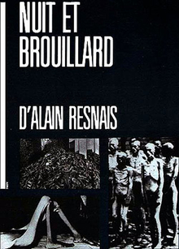

Alain Resnais
1956
32 minutes
You're going to watch this film because it was misidentified by a friend of yours after looking for naked clips of Natalie Portman on the aznude website. Yes, same friend as Section 151, different night. More wholesome than it probably sounds, but you can't currently remember the exact sequence of events that led to this. You showed them some clips of Natalie Portman playing a stripper in Closer and giving Jude Law a lapdance, and then they pulled up the Hotel Chevalier short film that proceeded Wes Anderson's The Darjeeling Limited in response. Like Hiroshima Mon Amour from Section 166, that short film is one of those "horny and sad" films that makes you feel sad for feeling horny, or vice versa. Jason Schwartzman is a sad man in a hotel in Paris rotting in his room while watching Stalag 17, which your friend inaccurately informs you is Night and Fog by Resnais, which would be a particularly pathetic film to be watching solo in Paris, not that Stalag 17 is much better. His ex-girlfriend, Natalie Portman, shows up and they have sad doomed sex in a prequel to the more merry events in The Darjeeling Express, where he's just a mildly-sad randy little horndog for the most part.
Night and Fog is a straight up Holocaust film that came out when that topic was fresh in everyone's mind. It is a perfect Alain Resnais film to throw on when you feel like feeling sad without feeling horny. It is notable for being one of the first treatments of the subject, but otherwise strikes you as unremarkable.
You and your high school girlfriend ended up making out on the couch when Ford paid to have the film Schindler's List broadcast on television uncut without commercial interruptions. You are very much not proud of this, but it was more inspired by having time and opportunity than the content of what you were watching. At least you felt sad afterwards.
Time to choose something different: